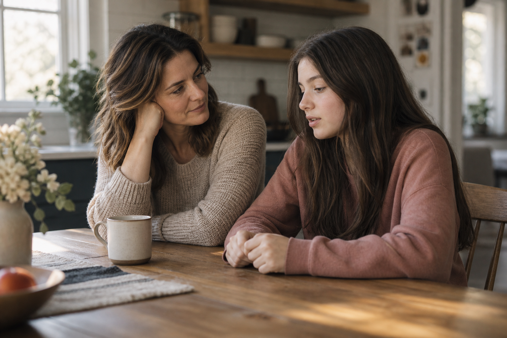

Parents
Parenting can leave you second-guessing yourself, especially when the same conflict keeps coming back. We can work on communication, boundaries, understanding your child's reactions and repairing after hard moments.
Parent supportMaybe you're worried about your child. Maybe you're tired of the same conflict, anxiety or patterns showing up in your own life. In therapy, we can take time to understand what's underneath it. Then we'll figure out what needs to change.
I offer in-person sessions in New York City and telehealth sessions, in English and Spanish.
A free 15-minute call for new clients.

I'm Gladys Henriquez, a mental health counselor working with parents, teens and adults in New York. I don't come into therapy assuming I know your life better than you do. I listen, ask questions and pay attention to the patterns that are easy to miss when you're living inside them.
I believe in my clients' strengths, including the ones they have a hard time seeing in themselves. If something we try is not helping, I want to know. We can adjust instead of forcing an approach that does not fit. We'll work at your pace, with patience for the parts that take time.
About GladysGladys Henriquez
Mental Health Counselor – Limited Permit (MHC-LP)
I work under the practice of John Orr, LMHC.
Maybe your teenager is pulling away, school has become a struggle, or every conversation turns into an argument. You may be trying to decide when to give space, when to step in and whether you're handling it the right way.
Instead of focusing only on the behavior in front of us, we'll look at what's happening underneath it, what keeps the conflict going and what could help you respond differently. There is room to talk about what all of this is doing to you, too.
Read about parent supportThree audiences, one practice.
Sessions in English and Spanish.

Parenting can leave you second-guessing yourself, especially when the same conflict keeps coming back. We can work on communication, boundaries, understanding your child's reactions and repairing after hard moments.
Parent supportSchool, friendships, anxiety and family stress can pile up fast. You do not have to come in with the perfect explanation. We can start with what has been hard lately.
Therapy for teensIf you keep replaying conversations, bracing for problems or falling back into patterns you understand but still cannot change, therapy can give us a place to work through what is keeping you stuck.
Therapy for adultsThe free 15-minute consultation gives you a chance to tell me what you're looking for, ask questions and get a sense of how I work. You can decide afterward whether you want to schedule a first session.
A free 15-minute call for new clients.